Scouts of the host
A scouting band of the host. Its horn-bearer will call the rest if you give him three turns: cut him down first.
Silence the horn · Forest clearing, Ruined steading
Isometric roguelike tactics
Isometric roguelike tactics RPG: Amberfeld Garrison against the endless Hillsvain Host, with turn-based squad battles, waves and a last stand until dawn. Blender environment art; drawn units until fal is unlocked.
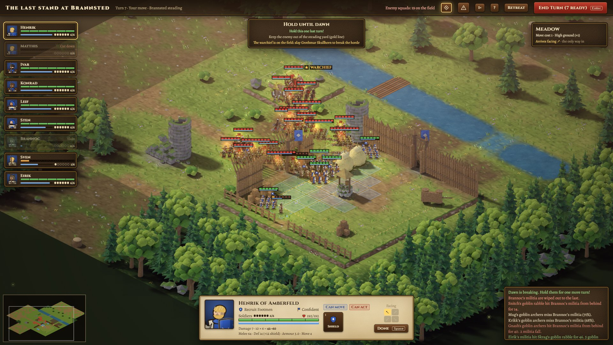
The campaign
A host of orcs and goblins is pouring out of the Hillsvain Woods, burning every steading west of the Vattern. The Margrave's riders are days away. March out, slow the horde, and hold Brannsted until they come: you are all that stands between the host and the river.
5 stages · 6 squads in the company · 14 command points · tier 1, apprentice
In this guide
A scouting band of the host. Its horn-bearer will call the rest if you give him three turns: cut him down first.
Silence the horn · Forest clearing, Ruined steading
A mob of rabble running ahead of the host, burning as it goes. Their outriders are not far behind.
Break the stragglers · Forest clearing, Ruined steading
Raiders are firing the farms. Their main body is coming back down the road with the loot: finish the first band before it arrives.
Drive off the raiders · Forest clearing, Ruined steading
Wolf riders and archers. The riders will circle your line for your crossbowmen: keep your flanks closed and your spears set.
Hold against the riders · Forest clearing
An orc drives the vanguard of the host before him. Behind it the next band is already on the road.
Break the vanguard · Forest clearing, Ruined steading
Brutes smash squads out of the line and push into the gap. Do not let the goblins follow them through.
Stop the brutes · Forest clearing, Ruined steading
The host has woken the trolls of the deep wood. Their wounds close as you watch: concentrate your blows.
Fell the trolls · Forest clearing, Ruined steading
Goblin witch-doctors walk with this band. Their fire falls on your ranks, careless of their own, and their hexes drive the goblins mad. Get at the shamans before they burn the company.
Silence the shamans · Forest clearing, Ruined steading
The host is dragging its war engines to the front: a rock lobber and a spiked war wagon, with spears to guard them. Meet the wagon's charge with set spears, then rush the lobber before it pounds your line flat.
Wreck the engines · Forest clearing, Ruined steading
They were waiting on both sides of the road. Form a ring, then break them.
Fight free · Forest clearing
The people of Ostby are crossing behind you. Keep the horde off the road until the last cart is through.
Hold the ford for six turns · Vattern ford
Raider war camp
The whole host is coming, by night. Hold the ground until the Margrave's riders arrive at dawn, or slay the warchief and break the horde.
Hold until dawn · Brannsted steading, Vattern ford
02 · Characters
The in-game battle frame of each unit, with its rules from the game data. Stats are per soldier at level 1. Ability names open the ability; poses open its animations.
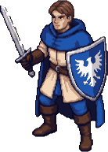
Armoured infantry with sword and eagle kite shield. Holds the line and shelters weaker troops behind the shield wall.
Squad of 6 · 45 silver, 3 command · per level +4 HP, +4 melee, +2 defense, +4 morale
Abilities
Until your next turn: +20 defense and +15 ranged defense, attacks from the sides count as frontal, and adjacent allies gain +6 defense.
Run at least 2 tiles and crash into an enemy behind the shields: +30% damage, +5% to hit and 10 more morale lost. A spear square breaks the charge.
Until your next turn: stand guard over every friendly squad beside this one. The first attack or shot aimed at one of them strikes the guard instead, always on its front. Free attacks, spells and squads that stand guard themselves are not covered.
Slam an adjacent enemy for light damage, shaking its morale and pushing it back one tile. Blocked pushes deal extra damage.
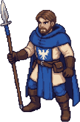
Long spears set against the charge. Strikes first at anything that closes in, and turns choke points into killing ground.
Squad of 6 · 30 silver, 2 command · per level +4 HP, +4 melee, +2 defense, +4 morale
Abilities
Until your next turn: the first enemy to step into a tile in front of or beside this spearman takes a free attack at +15% hit and +50% damage. A hit stops its advance.
Until your next turn: spears out on every side. Every attack counts as frontal, the spears strike first at anyone who closes in from any side, charges lose their bonus and the square cannot be pushed. +6 defense, but −10 ranged defense: a packed target.
Strike an enemy two tiles away in a straight line, over the head of whoever stands between.
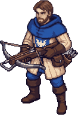
Heavy bolts that punch through mail at range. Deadly behind a screen, helpless once the enemy reaches them.
Squad of 6 · 40 silver, 3 command · per level +3 HP, +4 ranged, +1 defense, +4 morale
Abilities
Hold fire. During the enemy turn, shoot the first enemy that moves within range and sight (-5% hit).
Take the time to aim: +20% to hit, ignoring cover, an obstructed view and troops in the way, and 6 more morale lost. Only in a turn the crossbowmen have not moved.
A fully cranked bolt: +50% damage, ignores armour, costs two bolts.
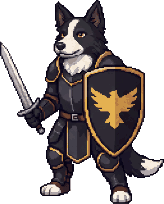
Sworn hounds of the royal house in black-and-gold plate. Quick on their feet, stubborn in the line and very hard to break.
Squad of 6 · 85 silver, 4 command · per level +4 HP, +4 melee, +2 defense, +4 morale
Abilities
A low growl from the whole pack: enemies within 2 tiles lose 12 morale and are cowed until the end of their next turn (−10 to hit).
Bound at least 2 tiles and hit an enemy at full tilt: +20% damage, +12% to hit and 14 more morale lost. A spear square breaks the charge.
Until your next turn: stand guard over every friendly squad beside this one. The first attack or shot aimed at one of them strikes the guard instead, always on its front. Free attacks, spells and squads that stand guard themselves are not covered.
The hounds tend each other's wounds: heal 3–5 per hound standing, stop bleeding, shake off the chill and gain 6 morale. Not with an enemy beside them. The fallen stay dead.
Promotion: the veterans' growl becomes a howl that carries. Enemies within 3 tiles lose 16 morale and are cowed until the end of their second turn (−10 to hit).
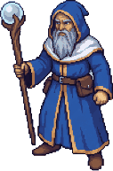
Three magi of the Amberfeld circle in the company blue. They call down chain lightning, freeze a charge in its tracks and close the wounds of the line, but an enemy blade within reach of them is a disaster.
Squad of 3 · 80 silver, 3 command · per level +3 HP, +4 ranged, +1 defense, +4 morale
Abilities
Lightning strikes an enemy squad in sight within 6 tiles for 9–12 per mage, ignoring armour, then arcs to the nearest other enemy within 2 tiles, and on to a third (60% and 36% of the damage).
A blast of ice at an enemy squad within 5 tiles: 5–7 per mage, half that to enemies beside it. Everyone struck is chilled through their next turn: half movement, −10 to hit and −10 defense.
Heal a friendly squad (or the mages themselves) within 5 tiles for 8–11 per mage and steady them (+8 morale). Wounds close; the fallen stay dead.
Every friendly squad within 2 tiles of the mages, themselves included, heals 4–6 per mage and gains 5 morale. The fallen stay dead.
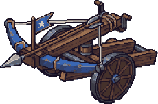
A great bolt-thrower on a wheeled carriage, worked by a crew of three. Its bolt punches through one squad and into the next one behind it. It cannot loose in a turn it has been moved, and its crew are no fighters.
1 machine, crew of 3 · 90 silver, 3 command · per level +3 HP, +4 ranged, +3 morale
Abilities
No abilities of its own.
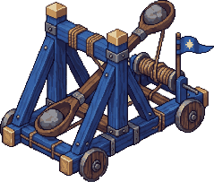
A torsion catapult that lobs stones over walls and heads into the enemy ranks. A stone smashes the squad it lands on and everyone beside it, friend or foe, and a miss lands a tile astray. It cannot loose in a turn it has been moved, nor at anything closer than three tiles.
1 machine, crew of 3 · 100 silver, 4 command · per level +3 HP, +4 ranged, +3 morale
Abilities
Lob a stone over walls and heads at a tile 3–9 tiles away: 10–14 per crewman to the squad there and 40% of that to every squad beside it, friend or foe. A miss lands one tile astray. Not in a turn the mangonel has moved.
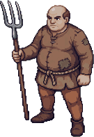
Farmers and woodcutters with spears and pitchforks, defending their own homes. Brave, untrained, and quick to break if the line around them gives.
Squad of 6 · per level +2 HP, +2 melee, +2 morale
Abilities
No abilities of its own.
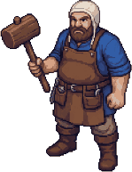
Garrison craftsmen in leather aprons who wheel, wind and loose the ballista and the mangonel. They come with the machine, three to a crew, and are no fighters.
Crew of the Ballista and Mangonel · Uses the machine's stats
Abilities
No abilities of its own.
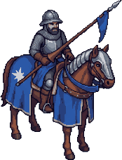
The Margrave's lancers. If the last stand at Brannsted holds through the night, they crest the hill at sunrise and charge into the host. The player never commands them.
Rides in at dawn · Drawn only: no stats or rules
Abilities
No abilities of its own.
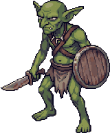
Nine half-starved goblins with knives and hatchets, driven ahead of the host. Weak alone, deadly in a pack: they pour into every gap and swarm round the flanks.
Squad of 9 · per level +1 HP, +2 melee, +2 morale
Abilities
No abilities of its own.
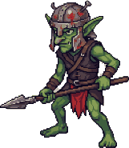
Quick, cruel and cowardly. Dangerous in packs, quick to break when the pack thins.
Squad of 6 · per level +2 HP, +2 melee, +2 morale
Abilities
No abilities of its own.
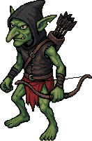
Hooded archers who loose from the treeline and scatter when pressed.
Squad of 6 · per level +2 HP, +2 ranged, +2 morale
Abilities
No abilities of its own.
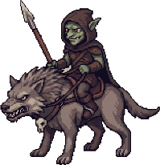
Goblins on great grey wolves, faster than any soldier on foot. They circle a line to fall on crossbowmen and exposed flanks, and wheel away before a blow can answer. Set spears stop them.
Squad of 4 · per level +3 HP, +2 melee, +3 morale
Abilities
No abilities of its own.
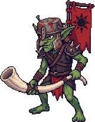
A goblin with a great war horn and a few spears to guard it. If he lives long enough to sound it, more of the horde will answer. Kill him first.
Squad of 4 with escort · per level +2 HP, +2 melee, +2 morale
Abilities
No abilities of its own.
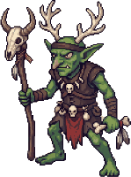
Bone-hung witch-doctors of the host, three to a fire. They hurl fireballs into packed ranks, careless of their own, whip the horde into a killing frenzy and tear at a squad's insides with the gutripper hex.
Squad of 3 · per level +2 HP, +3 ranged, +2 morale
Abilities
A ball of fire hurled at a tile within 6 tiles: 7–10 per shaman to the squad there and half to every squad beside it, friend or foe. A miss bursts one tile astray.
Drive a friendly squad within 4 tiles into a killing frenzy until the end of its next turn: +10 to hit and +3 damage per soldier in melee, morale losses halved, but −8 defense.
A hex that tears at the insides of an enemy squad within 5 tiles: 5–7 per shaman, ignoring armour, and the squad bleeds for 40% of that again at the start of each of its next two turns.
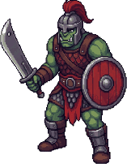
Iron-shod and fearless. Charges straight at the line and cleaves through it.
Squad of 6 · per level +4 HP, +2 melee, +3 morale
Abilities
Passive. After moving 2+ tiles, melee attacks deal +3 damage and cost the target 8 more morale.
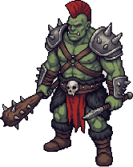
Savage orcs with spiked war-clubs and no shields. Every blow that lands smashes a squad back out of the line, and the brutes force their way into the gap.
Squad of 6 · per level +4 HP, +2 melee, +3 morale
Abilities
Passive. After moving 2+ tiles, melee attacks deal +3 damage and cost the target 8 more morale.
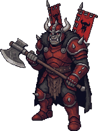
The will behind the raids. His war cry steadies the goblins; his fall shatters them.
Squad of 6 with escort · per level +5 HP, +2 melee · leads the host as warchief
Abilities
Passive. After moving 2+ tiles, melee attacks deal +3 damage and cost the target 8 more morale.
Allies within 4 tiles gain 20 morale; enemies within 4 tiles lose 8.
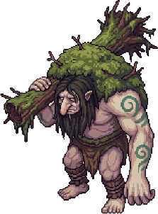
Ancient trolls grown over with moss and fungus, swinging uprooted logs. Their wounds close as you watch, but a fallen troll does not get up again.
Squad of 3 · per level +8 HP, +2 melee, +3 morale
Abilities
No abilities of its own.
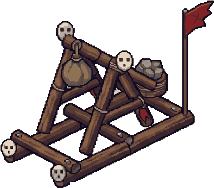
A crooked goblin catapult lashed together from stolen timber. It lobs boulders into the enemy ranks and anyone near them, its own kind included, and as often as not lands them a tile off. It cannot loose in a turn it has moved.
1 machine, crew of 3 · per level +2 HP, +2 ranged, +2 morale
Abilities
Lob a boulder at a tile 3–8 tiles away: 11–16 per crewman there and half beside it, friend or foe. Often lands a tile astray. Not in a turn it has moved.
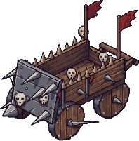
A heavy cart bristling with iron spikes, shoved at a run by its goblin crew. It rams into the line, smashes a squad back out of it and rolls into the gap. Set spears still hurt it.
1 machine, crew of 3 · per level +4 HP, +2 melee, +2 morale
Abilities
Passive. After moving 2+ tiles, melee attacks deal +3 damage and cost the target 8 more morale.
The succubus and wolf scout rigs under Character rigs are prototypes without a unit entry, so they are not listed here.
03 · Factions
The garrison the player commands, the friends who fight beside it and the host it has to outlast. Pick a unit to open its card.
The 7 squad types the player can recruit and command. Footmen, spearmen and crossbowmen come from every muster at the Barracks; the Border Collie Royal Guard can answer once it reaches level 2; and each muster offers one specialist squad: battle mages, a ballista or a mangonel.
The 3 friendly figures that fight on the garrison's side without being recruited: the local militia in two encounters, the engineers who crew the war machines and the Margrave's riders who end the last stand at dawn.
The 12 enemy units of the Hillsvain Host. Goblins make up the bulk of every wave, orcs and trolls break the line, and two crude war engines appear in their own encounter.
A host of orcs and goblins is pouring out of the Hillsvain Woods, burning every steading west of the Vattern. The Margrave's riders are days away. March out, slow the horde, and hold Brannsted until they come: you are all that stands between the host and the river.
04 · Abilities
All 25 abilities in the game data, with the in-game icon and the units that carry them. A promotion is learned when the squad is promoted.
Until your next turn: +20 defense and +15 ranged defense, attacks from the sides count as frontal, and adjacent allies gain +6 defense.
Until your next turn: the first enemy to step into a tile in front of or beside this spearman takes a free attack at +15% hit and +50% damage. A hit stops its advance.
Hold fire. During the enemy turn, shoot the first enemy that moves within range and sight (-5% hit).
Until your next turn: stand guard over every friendly squad beside this one. The first attack or shot aimed at one of them strikes the guard instead, always on its front. Free attacks, spells and squads that stand guard themselves are not covered.
Until your next turn: spears out on every side. Every attack counts as frontal, the spears strike first at anyone who closes in from any side, charges lose their bonus and the square cannot be pushed. +6 defense, but −10 ranged defense: a packed target.
Slam an adjacent enemy for light damage, shaking its morale and pushing it back one tile. Blocked pushes deal extra damage.
Strike an enemy two tiles away in a straight line, over the head of whoever stands between.
A fully cranked bolt: +50% damage, ignores armour, costs two bolts.
Passive. After moving 2+ tiles, melee attacks deal +3 damage and cost the target 8 more morale.
Run at least 2 tiles and crash into an enemy behind the shields: +30% damage, +5% to hit and 10 more morale lost. A spear square breaks the charge.
Bound at least 2 tiles and hit an enemy at full tilt: +20% damage, +12% to hit and 14 more morale lost. A spear square breaks the charge.
Take the time to aim: +20% to hit, ignoring cover, an obstructed view and troops in the way, and 6 more morale lost. Only in a turn the crossbowmen have not moved.
Allies within 4 tiles gain 20 morale; enemies within 4 tiles lose 8.
A low growl from the whole pack: enemies within 2 tiles lose 12 morale and are cowed until the end of their next turn (−10 to hit).
Promotion: the veterans' growl becomes a howl that carries. Enemies within 3 tiles lose 16 morale and are cowed until the end of their second turn (−10 to hit).
The hounds tend each other's wounds: heal 3–5 per hound standing, stop bleeding, shake off the chill and gain 6 morale. Not with an enemy beside them. The fallen stay dead.
Lightning strikes an enemy squad in sight within 6 tiles for 9–12 per mage, ignoring armour, then arcs to the nearest other enemy within 2 tiles, and on to a third (60% and 36% of the damage).
A blast of ice at an enemy squad within 5 tiles: 5–7 per mage, half that to enemies beside it. Everyone struck is chilled through their next turn: half movement, −10 to hit and −10 defense.
Heal a friendly squad (or the mages themselves) within 5 tiles for 8–11 per mage and steady them (+8 morale). Wounds close; the fallen stay dead.
Every friendly squad within 2 tiles of the mages, themselves included, heals 4–6 per mage and gains 5 morale. The fallen stay dead.
A ball of fire hurled at a tile within 6 tiles: 7–10 per shaman to the squad there and half to every squad beside it, friend or foe. A miss bursts one tile astray.
Drive a friendly squad within 4 tiles into a killing frenzy until the end of its next turn: +10 to hit and +3 damage per soldier in melee, morale losses halved, but −8 defense.
A hex that tears at the insides of an enemy squad within 5 tiles: 5–7 per shaman, ignoring armour, and the squad bleeds for 40% of that again at the start of each of its next two turns.
Lob a stone over walls and heads at a tile 3–9 tiles away: 10–14 per crewman to the squad there and 40% of that to every squad beside it, friend or foe. A miss lands one tile astray. Not in a turn the mangonel has moved.
Lob a boulder at a tile 3–8 tiles away: 11–16 per crewman there and half beside it, friend or foe. Often lands a tile astray. Not in a turn it has moved.
05 · Animations
Battle figures are drawn poses. soldier_anim.gd plays them and adds the stride, bounce, breathing and lean from _gait.json, so in battle they move more than these previews.
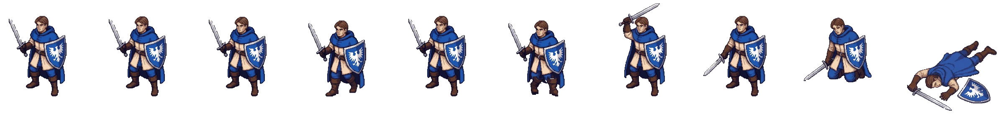
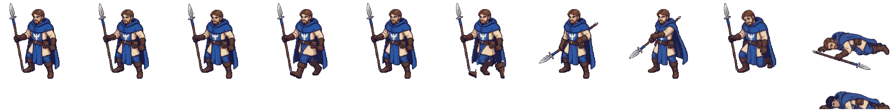
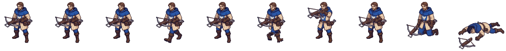
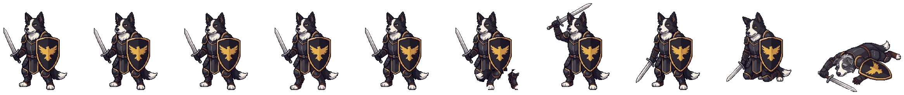
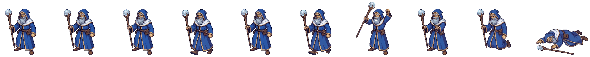
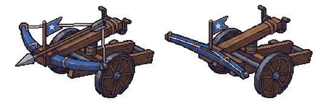
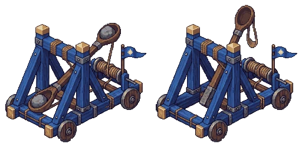
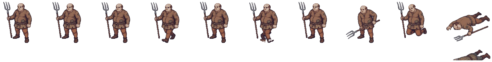
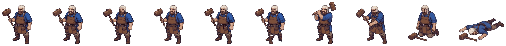
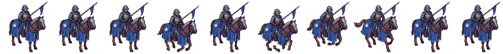
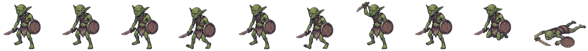
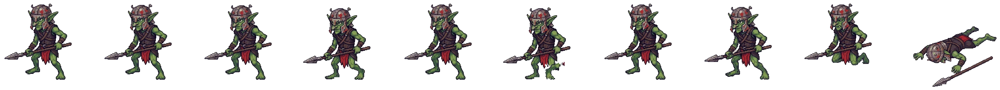
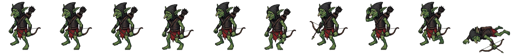
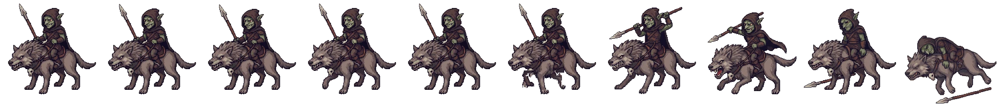
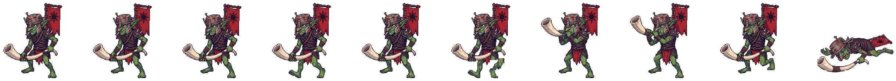
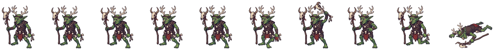
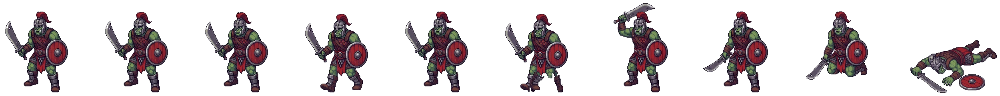
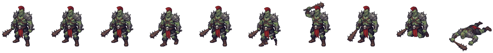
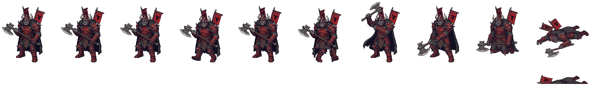
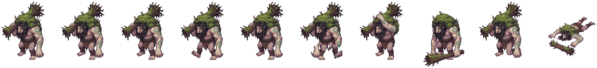
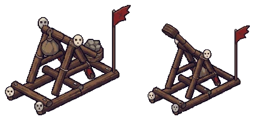
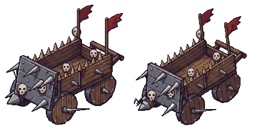
06 · Terrain
Ground types, obstacles and battlefields from terrain.json and maps.json. Height, which raises the line of sight, comes from each map.
| Ground | Id | Move cost | Defense | Ranged cover | Blocks sight |
|---|---|---|---|---|---|
| Meadow | grass | 1 | — | — | — |
| Trampled earth | dirt | 1 | — | — | — |
| Road | road | 1 | — | — | — |
| Thicket | brush | 2 | — | −15% | half |
| Woods | forest | 2 | +5 | −20% | three quarters |
| Shallow ford | shallows | 3 | −10 | — | — |
| Deep water | water | impassable | — | — | — |
| Flagstones | stone | 1 | — | — | — |
| Bridge | bridge | 1 | — | — | — |
| Mire | mud | 2 | −5 | — | — |
| Rubble | rubble | 2 | +5 | −10% | — |
Ranged cover lowers the chance to hit a squad standing there. Sight blocking adds up along the line: two tiles of thicket, or one of woods plus anything leafy, hide what lies behind.
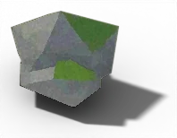
blocks movement · blocks sight · −25% to shots past it
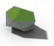
blocks movement · open sight · −20% to shots past it
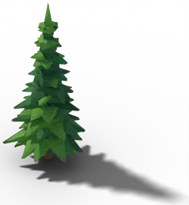
blocks movement · blocks sight · −25% to shots past it
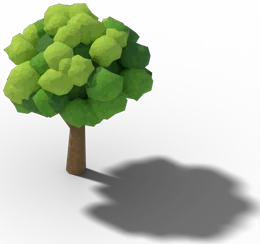
blocks movement · blocks sight · −25% to shots past it
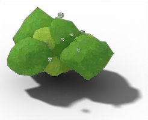
blocks movement · partly blocks sight · −15% to shots past it
blocks movement · open sight · −30% to shots past it
blocks movement · blocks sight · −30% to shots past it
blocks movement · open sight · −15% to shots past it
blocks movement · open sight · −10% to shots past it
blocks movement · open sight · −20% to shots past it
blocks movement · partly blocks sight · −25% to shots past it
blocks movement · blocks sight · −20% to shots past it
blocks movement · open sight · −10% to shots past it
blocks movement · open sight
blocks movement · open sight · −35% to shots past it
walkable · open sight · +10 defense
blocks movement · open sight · −15% to shots past it
blocks movement · open sight
blocks movement · partly blocks sight · −25% to shots past it
blocks movement · partly blocks sight · −20% to shots past it
blocks movement · open sight · −20% to shots past it
14 × 12 tiles · forest
An open glade ringed by pine and oak. Tree clumps and boulders break up the field.
Used by: Scouts of the host, Stragglers ahead of the host, Raiders burning the steadings, Wolf riders on the road, Vanguard of the host, Orc brutes and their goblins, Moss trolls of the deep wood, Shamans of the host, The host's war engines, Ambush on the road
14 × 12 tiles · river
A burned farmstead by a river. The bridge and the ford are the only crossings.
Used by: Scouts of the host, Stragglers ahead of the host, Raiders burning the steadings, Vanguard of the host, Orc brutes and their goblins, Moss trolls of the deep wood, Shamans of the host, The host's war engines
15 × 13 tiles · camp
The warband's camp: tents, totems and cookfires behind a screen of trees.
Used by: The vanguard's camp
24 × 22 tiles · forest
A palisaded farm on a low rise: two gates, a breach by the corner tower and a gap in the back fence. A stream with a bridge and a ford covers the west.
Used by: The last stand at Brannsted
24 × 22 tiles · river
A river with one bridge and one ford. On the near bank a low ridge with old ruins guards the road the refugees are fleeing down.
Used by: Cover the refugees, The last stand at Brannsted
07 · More pages
Design notes, labs and rigs live in their own tabs. Click one to open it. To come back, pick Meridius in the rail left of the page, then Game guide in the bar above.
16 tabs
8 tabs
3 tabs
Source: projects/meridius/source/godot/data/, assets/sprites/anim/, assets/icons/ and assets/sprites/blender/.
Rebuild with python workspace/2026-10-20_meridius/hub/build.py.